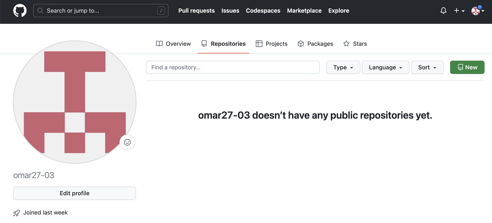

What is Github
GitHub is an online software development plafrom.It's used for storing, tracking, and collaborating on software projects.
It makes it easy for developers to share code files and collaborate with fellow developers on open-source propjects.GitHub also serves as a social networking site where developers can openly netwrok, collaborate, and pitch their work.
How does GitHub work
GitHub users create accounts, upload files, and create coding projects.
while anyone can code idependently, teams of people build most development projects.Sometimes these teams are all in one place at once (working on the same branch), but more often they work asynchronously.There are many challanges to creating collaborative projects with distributed teams.GitHub makes this process much simpler in a few diffrent ways.
Enhanced Collaboration
The single biggest selling point of GitHub is its set of project collaboration features, including version control and access control.
To illustrate whats possible with Github, imagine this scenario.You want to code a web, and enlist your friend to help.
You would create a repository on GitHub that stores all the files, including current and past versions, then give your friend collaborator access to this repository.
